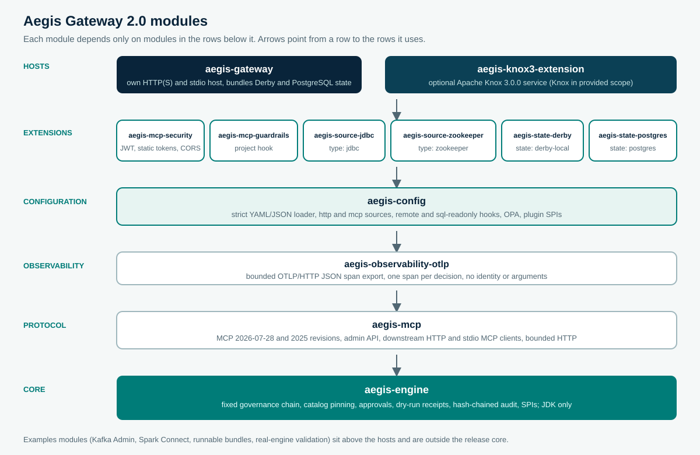

MODULE REFERENCE
What each module does, how to configure it, and what it enforces.
Aegis governs MCP actions. One engine makes every decision; the other modules carry the protocol, read configuration, authenticate callers, reach backends, keep state, and host the endpoint. This page describes each Maven module from its source code and tests.
MODULE MAP
Thirteen core modules in six layers, plus examples.
The root pom.xml builds, in order: aegis-engine, aegis-mcp, aegis-observability-otlp, aegis-config, aegis-mcp-guardrails, aegis-mcp-security, aegis-gateway, aegis-source-jdbc, aegis-source-zookeeper, aegis-source-a2a, aegis-state-derby, aegis-state-postgres, aegis-knox3-extension and examples. Java 17 is the compiler release. Each module depends only on modules in lower layers.

Three rules hold across every module and are enforced in code:
- Sources contribute capability only. A source supplies tool descriptors and executors. Classification, resources, groups, approval and previews come from the operator's configuration and are applied by the engine.
- Fail closed. A control that cannot run, a missing setting, or an ambiguous check denies the call or stops startup.
- Strict configuration. Every key that is read is recorded; any other key stops startup with its full path, before the audit journal or a durable state store is opened.
REQUEST PATH
How a governed tools/call crosses the modules.
- Host (
aegis-gatewayoraegis-knox3-extension): accepts HTTP(S) or stdio, authenticates the caller, admits the route, and bounds the body. - Protocol (
aegis-mcp): checks origin, JSON-RPC shape, MCP revision and headers, then dispatches the method. - Engine (
aegis-engine): runs the fixed governance chain, writes the intent record, then resolves the backend credential and calls the source. - Source (
mcp,http,jdbc,zookeeperor a plugin): performs the backend action with the source's own service credential. - Observers (
DecisionMetrics,aegis-observability-otlp): record the decision. Observers are read-only and cannot change it.
CORE
aegis-engine
The governance core. GovernanceEngine.call() runs every tool call through one fixed, fail-closed chain. The module also holds the tool catalog with definition pinning, signed approval and dry-run receipt tokens, the hash-chained audit journal, bounded in-memory state, the JSON parser with size limits, and the service interfaces that sources, hooks, policy engines and state stores implement.
Governance chain
Any unexpected exception inside a control becomes a POLICY_DENIED denial. Step numbers are stable and appear in audit records and denials.
| Order | Control (step) | What is checked | Denial |
|---|---|---|---|
| 1 | Exposure (1) | Tool exists and is active; quarantined entries are hidden; allowedGroups; write and destructive groups for MUTATE and DESTRUCTIVE tools. | NOT_EXPOSED, CATALOG_INTEGRITY, READONLY_CALLER |
| 2 | Input and scope (2) | Schema validation (depth 64), control-token parsing, typed resources by JSON pointer, resource scopes. | INVALID_INPUT, SCOPE_DENIED |
| 3 | Policy (3) | Rule policy (deny overrides, default deny) and optional OPA. A missing or failed decision denies. | POLICY_DENIED |
| 4 | Egress (5) | Every executor target and every URL found in the arguments: scheme, host allow list, user-info, and every DNS answer against denied address classes unless an allowed CIDR covers it. | EGRESS_DENIED |
| 5 | Rate and budget (6) | Per-caller and per-caller-per-tool windows and an hourly cost budget. | RATE_LIMITED, BUDGET_EXCEEDED |
| 6 | Circuit breaker (7) | Per-source breaker with exactly one probe while half-open. | BREAKER_OPEN |
| 7 | Screening and hooks (8) | 13 built-in injection phrases matched over the whole text in overlapping 64 Ki-character windows, with Base64 decoding on by default and governance hooks. A hook that throws, times out or returns nothing denies in ENFORCE mode. | PROMPT_INJECTION, POLICY_DENIED, INVALID_INPUT |
| 8 | Approval (4) | Per-call approval token for the classes in approval.requiredFor: bound to caller, action, gateway, source, resources and tool definition; single use; separation of duties. | APPROVAL_REQUIRED |
| 9 | Dry-run receipt (9) | DESTRUCTIVE calls need a fresh, single-use receipt from a dry run of the same arguments, caller and definition. | VRP_FAILED |
| 10 | Audit intent | ALLOW_INTENT must be appended to the journal before anything runs. | AUDIT_UNAVAILABLE |
| 11 | Execute (10) | Credentials are resolved only now; backend timeouts and failures are classified; error text is redacted. | TIMEOUT, BACKEND_ERROR |
| 12 | Output guard | Default redactions (AWS access key ids, PEM private keys, bearer tokens, JWT shapes) plus operator patterns, and an output byte bound with a truncation note. Binary parts are withheld unless output.allowBinary is set. | Output redacted or truncated; POLICY_DENIED for refused binary |
Security controls in detail
- Signed tokens. HMAC-SHA256; the key must be at least 32 bytes. Tokens longer than 8 KiB are refused, and token JSON is parsed with an 8 KiB, depth-4 limit.
- Approvals. At most 100 new requests per principal per hour (429 above that). Request ids must match
apr_[0-9a-f]{32}. A requester cannot approve their own request, a delegated identity cannot approve, and a decision is journaled before it takes effect; if the journal write fails, the decision is not made (503). - Catalog integrity. Modes
TOFUandREQUIRE_PINS. A changed definition is quarantined. Acceptance through the admin API requires the reviewed digest inAegis-Definition-Digestand succeeds only if the current definition still has that digest. - Audit journal. Append-only JSONL, each record hash-linked to the previous one from a zero genesis hash, with one writer per file (a second writer in the same or another process is refused, and the tail is read under the writer lock), optional fsync, an 8 MiB per-record bound, and a refusal to continue on a partial, oversized or unverifiable last record. Verification reads a stable prefix and does not hold the writer lock.
- JSON limits. Inbound documents default to 1 MiB and depth 32; configuration and audit records allow 8 MiB and depth 64.
- State.
InMemoryStateStoreis bounded bystate.maxEntries; when full, new approval requests are refused rather than older entries evicted. - Breaker accounting. Only failures a source marks as availability failures count toward the breaker, so a caller cannot open a shared breaker with requests the backend rejects for that caller alone.
Operator responsibility. Tool classes and resource pointers are operator-authored. Use REQUIRE_PINS for catalogs with MUTATE or DESTRUCTIVE tools; in TOFU mode the first definition seen becomes the pin. The egress guard covers HTTP destinations Aegis contacts; stdio children, database and ZooKeeper clients, and plugins that open their own sockets need a default-deny network policy around the process. Screening and redaction reduce risk and are heuristic. Between the egress check and the executor's own connection a name can be re-resolved; use IP literals or CIDRs where that matters. A local hash chain is tamper-evident when its head is also retained elsewhere: AuditCheckpointPolicy makes the journal export its head to a separate file and refuse to reopen a journal that is shorter than or different at the last exported head, and AuditCheckpointVerifier checks every exported head offline. SignedCatalogManifest verifies Ed25519-signed pin lists before reading them.
Tests: GovernanceEngineTest, ControlsTest, OutputGuardTest, ContentGovernorTest, HooksTest, ContentHooksTest, SeparationOfDutiesTest, HashChainFileAuditSinkTest, AuditCheckpointTest, SignedCatalogManifestTest, JsonTest, ObservabilityTest.
PROTOCOL
aegis-mcp
The MCP protocol layer. It serves the 2026-07-28 revision (per-request _meta, no sessions) and the 2025-11-25, 2025-06-18 and 2025-03-26 revisions (with caller-bound sessions). It also provides the admin REST API, the downstream MCP clients over Streamable HTTP and stdio that back type: mcp sources, and a bounded HTTP helper used by every outbound call.
Security controls
- Origin check. A present
Originoutsideserver.allowedOriginsis refused with 403 (DNS-rebinding defence), on every host. - Authentication required. A request without a caller identity gets 401 and JSON-RPC
-32001. - Strict JSON-RPC.
jsonrpcmust be2.0; ids, params and_metaare type-checked; the body is parsed withinserver.maxRequestBytes(413 above it). - Header and body agreement. On 2026-07-28,
Mcp-MethodandMcp-Namemust be present once and match the body (-32020). An unsupported revision gets-32022. - Sessions. Bound to the caller. Another caller's session id is answered exactly like an unknown id (404). At most 32 sessions per caller, least recently used first out; a full registry answers 503.
- Methods. POST carries JSON-RPC. DELETE ends a 2025-era session. Other methods get 405 with
Allow: POST. - Downstream clients. Redirects are never followed; responses are bounded by bytes and a total deadline;
tools/listpagination stops at 50 pages; restricted headers (host, content-length, connection, upgrade, expect) cannot be set by credentials. A stdio child receives only a small base environment plus the configuredenvandenvFromvalues.
Admin API
| Route | Who | Behaviour |
|---|---|---|
| GET /approvals, GET /approvals/{id} | approver groups | Pending requests and one request. |
| POST /approvals/{id}/approve, /deny | approver groups, non-delegated | Separation of duties; journaled before effect; 409 if already decided, 410 if expired. |
| GET /audit/verify | audit verifier groups | 200 verified, 409 broken, 503 unavailable. Fixed journal; file names are withheld. |
| GET /catalog | approver groups | Name, source, class, status, reason and digest of each tool. |
| POST /catalog/{tool}/accept | approver groups, non-delegated | 428 without exactly one Aegis-Definition-Digest; intent journaled first (503 if that fails); 409 unless the tool is quarantined and still has the reviewed digest. |
| GET /prompts, POST /prompts/{prompt}/accept | approver groups, non-delegated | Same rules for prompts, when a source offers prompts. |
Tests: ContentGovernanceTest, McpServerHandlerTest, ExistingMcpServerProxyTest, AdminApiTest, McpRoundTripTest, TracePropagationTest, BoundedHttpTest.
OBSERVABILITY
aegis-observability-otlp
An OTLP/HTTP JSON trace exporter with no OpenTelemetry SDK dependency. It observes decisions and exports one SERVER span per decision on a background thread, in batches, through a bounded queue.
| Key | Default | Notes |
|---|---|---|
| tracing.otlp.endpoint | none (tracing off) | Must be a URI and pass egress at startup. |
| tracing.otlp.headers | {} | Static headers. |
| tracing.otlp.tokenEnv | none | Environment variable holding a bearer token; must be set. |
| tracing.otlp.timeoutMs | 5000 | Connect and request timeout. |
| tracing.otlp.serviceName | gateway.name | service.name resource attribute. |
| tracing.otlp.maxQueue / batchSize / flushMs | 2048 / 128 / 2000 | Queue bound, batch size, flush interval. |
- Data minimisation. Spans carry request id, kind, outcome, method, tool, tool class, source, step and whether the backend was reached. Caller identity, arguments and results are never exported.
- Isolation from the request path. A full queue drops and counts spans; a slow or absent collector never blocks a request. No redirects; responses are bounded to 64 KiB. Header and token values are never logged.
- Lifecycle. The exporter thread starts only after the whole configuration validated.
Scope. The exporter is tested against a local HTTP endpoint that reads the OTLP JSON shape. A run against a live OpenTelemetry Collector is planned work.
Tests: OtlpSpanExporterTest.
CONFIGURATION
aegis-config
Turns one JSON or YAML document into a running gateway: engine, MCP handler, admin API, catalog refresher, metrics, tracer and state. It provides the built-in mcp and declarative http sources, the built-in remote and sql-readonly hooks, OPA policy, static source credentials and RFC 8693 token-exchange credentials, the OpenAPI draft generator, the built-in env, file and vault secret sources, and the ServiceLoader interfaces ToolSourceFactory, GovernanceHookFactory, StateStoreFactory and SecretProviderFactory.
Loader and validation
- JSON is parsed within 8 MiB and depth 64. YAML uses SnakeYAML's safe constructor with duplicate keys refused, at most 20 aliases, no recursive keys, depth 64 and an 8 MiB code-point limit. Unquoted dates and other special scalars are refused.
- Every unknown key stops startup with its path. The
hostandknoxsections are handed to the host, which validates them just as strictly. Pluginsettingsobjects are checked the same way. - Enumerated values (tool classes,
unlistedTools, ruleeffect, credentialtype, MCPera, catalogmode, screening and hook modes) accept only their documented names; anything else stops startup with the key path and the accepted values. - Secrets are named by environment variable (
...Envkeys). An unset or empty variable stops startup. - Every outbound endpoint the configuration names (source URLs, the OPA URL, the remote hook URL and the OTLP endpoint) must be an absolute http(s) URL without user-info, and the policy, hook and tracing endpoints must also pass the egress allow list at startup.
- The durable state store, the audit journal and the tracing thread open only after the whole document validated, so a configuration error leaves nothing open or locked.
Top-level keys
| Key | Default | Meaning |
|---|---|---|
| gateway.name | aegis | Name in audit records, serverInfo and tokens. |
| access.writeGroups | [] | Groups that may call MUTATE tools at all. |
| access.destructiveGroups | writeGroups | Groups that may call DESTRUCTIVE tools. |
| access.approverGroups | [] | Groups that may decide approvals and accept definitions. |
| access.auditVerifierGroups | [] | Groups that may call GET /audit/verify. |
| approval.keyEnv / keyFile | none | HMAC key of at least 32 bytes; keyEnv wins when both are set. Without a key or approver groups, approval-required calls are denied. |
| approval.requiredFor | [MUTATE, DESTRUCTIVE] | Classes needing per-call approval. READ is refused. An explicit empty list turns per-call approval off. |
| approval.requestTtlSeconds / tokenTtlSeconds | 1800 / 600 | Lifetimes of a request and an approval token. |
| approval.advertiseControlArguments | true | Show the control arguments on write tools. |
| vrp.enabled / ttlSeconds | true / 900 | Dry-run receipts for DESTRUCTIVE calls and their lifetime. |
| state.type | memory | memory, or a provider such as derby-local or postgres. |
| state.maxEntries | 1000000 | Bound for the memory store. |
| state.settings | {} | Provider settings; must be empty for memory. |
| audit.file | required | Journal path, relative to the configuration file. |
| audit.fsync / includeArguments | true / false | Force each record to disk; record call arguments. |
Sources
| Key (sources[]) | Default | Meaning |
|---|---|---|
| id | required | [a-z0-9][a-z0-9_-]{0,63}, unique. |
| type | required | mcp, http, or a plugin type. |
| namePrefix | "" | Prefix for exposed tool names. |
| timeoutMs | 30000 | Backend budget per call. |
| unlistedTools | EXPOSE | EXPOSE or HIDE discovered tools that are not listed under tools. |
| defaultClass | DESTRUCTIVE | Class of discovered tools that are not listed. |
| trust.state / trust.evidence | ACTIVE / none | QUARANTINED contributes no callable tool and requires evidence text. |
| credentials.type | none | bearer (tokenEnv), basic (usernameEnv, passwordEnv), header (header, valueEnv): the source's own service credential. token-exchange (tokenEndpoint, clientIdEnv, clientSecretEnv, audience or resource, scope, timeoutMs, checkSubject, discovery): a per-caller token from the identity provider for each call; the token endpoint must pass egress. Caller tokens are never forwarded to a backend. |
| mcp: url / transport / era / legacyVersion / maxResponseBytes | required for http / http / AUTO / 2025-11-25 / 4 MiB | Existing MCP server over Streamable HTTP or stdio. |
| mcp: command / env / envFrom / workingDir | stdio only | Child process; envFrom values name environment variables that must be set. |
| mcp: resources.uriPatterns / prompts.names / completions | off | Resources need specific URI globs (* is refused); prompts and completions are opt-in. |
| http: baseUrl / tools[] | required | Declarative REST tools: name, description, inputSchema, request (method GET, path, query, body, headers), response (pointer, status check, maxBytes 1 MiB). |
| tools.<name>.class / resources / dryRun / allowedGroups / timeoutMs | see CONFIGURATION | Per-tool classification, typed resources, preview mode (GATEWAY, ARGUMENT, TOOL), visibility and timeout. |
| settings | {} | Plugin source settings, validated strictly. |
Controls
| Key | Default | Meaning |
|---|---|---|
| egress.allowHosts / allowCidrs / schemes | [] / [] / [https] | Each source host and scheme is added automatically. Non-public answers need an allowed CIDR. |
| egress.checkArgumentUrls | true | Check URLs nested in arguments. |
| policy.rules[] | required with opa | id, effect (ALLOW, DENY), groups, actors, tools, classes, resources. Any matching DENY wins; otherwise the first matching ALLOW; otherwise deny. |
| policy.opa.url / timeoutMs / includeArguments / tokenEnv | none / 2000 / false / none | Only {"result": true} or {"result": {"allow": true}} allows. Responses are bounded to 64 KiB; no redirects. |
| scopes[] | [] | groups and resources globs. |
| rateLimits.perCallerPerMinute / perCallerPerToolPerMinute / budgetPerHour | 0 / 0 / 0 | 0 means off. Costs READ 1, MUTATE 5, DESTRUCTIVE 20. |
| breaker.failureThreshold / openSeconds | 5 / 30 | Per-source circuit breaker. |
| screening.mode / toolDefinitions / content | ENFORCE | ENFORCE, AUDIT or OFF for arguments, definitions, and resources and prompts. |
| screening.phrases / decodeBase64 | 13 built-in / true | Phrase list; Base64 decoding for argument screening (always on for definitions and content). |
| output.useDefaultRedactions / redact / maxBytes | true / [] / 1 MiB | Redaction patterns and output bound. |
| output.allowBinary | false | Pass binary parts of tool results (image and audio data, any blob) unchanged. When false, such a result is withheld and the call is denied with POLICY_DENIED. |
| hooks[] | [] | type (remote, sql-readonly, plugin), operations (all when empty), mode, methods, groups, sources, settings. |
| remote hook settings | timeoutMs 2000, maxResponseBytes 8192 | url (egress-checked), tokenEnv, phases (BEFORE, AFTER), includeArguments, includeResult. Response cap clamped to 256 to 65536 bytes; allow must be a literal boolean. |
| sql-readonly settings | maxChars 8192 | arguments (required). One statement, a reading first keyword, no writing keyword anywhere; comments and quoted text removed first. |
| catalog.mode / pins / pinFile | TOFU / {} / none | REQUIRE_PINS refuses tools without an operator pin. |
| catalog.acceptNewToolsAfterStart / failOnSourceError / refreshSeconds | false / true / 0 | New tools after start are quarantined unless allowed; a failing source stops startup; periodic refresh. |
| server.* | all four revisions, sessions on | name, version, versions, legacySessions, allowedOrigins, toolsListTtlMs, instructions, maxRequestBytes 1 MiB, sessionIdleSeconds 1800, maxSessions 10000. |
| metrics.enabled | true | Prometheus decision counters, at most 10000 series. |
Operator responsibility. The sql-readonly hook is a keyword and shape guard: a statement that passes may still call a writing function, so pair READ SQL tools with a read-only database credential or classify them MUTATE. Every secret the file names is read through one secrets.source: the environment, one file per name in a mounted directory, or one Vault KV v2 secret read at start-up (validated against OpenBao 2.7.1). Values are not refreshed while the gateway runs.
Tests: GatewayFactoryTest, HttpSourcesAndWiringTest, RemoteHookTest, SqlReadOnlyHookTest, DryRunPreviewToolTest, OpaPolicyTest, SecretProvidersTest, AuditCheckpointAndManifestConfigTest, and, with -Pvault-integration, VaultKvSecretProviderIT.
IDENTITY PERIMETER
aegis-mcp-security
The identity perimeter of the own host. It parses the host section strictly, authenticates callers with JWT (HS256, or RS256 and ES256 through JWKS), static SHA-256 token digests, or a SPIFFE X.509-SVID the mutual TLS handshake verified, admits route groups and OAuth scopes before the body is read, applies exact-origin CORS, and publishes RFC 9728 protected resource metadata.
Security controls
- Bearer extraction. Exactly one
Authorizationheader with theBearerscheme and a value of at least 8 characters. - JWT verification. Token at most 16 KiB; compact JWS; algorithm in the configured list;
critrefused; signature (constant-time for HMAC); issuer; audience;exprequired with clock skew;nbfandiatnot in the future; subject present. Failure reasons are logged at debug level and never sent to the client. - Delegation. The RFC 8693
actchain is read to depth 8 and kept in the caller identity and audit records. Delegated identities cannot approve or accept definitions. - JWKS. Fetched with a 256 KiB and 5 second bound, no redirects; keys not for signing, RSA keys under 2048 bits and EC keys other than P-256 are skipped; refresh is rate-limited; an expired key set is never used.
- Static tokens. Only SHA-256 digests are held and compared in constant time; a token named by
tokenEnvmust be at least 16 characters. - Admission. 401 with a
WWW-Authenticatechallenge (withresource_metadatawhen OAuth metadata is published); 403insufficient_scopewhen a required scope is missing; 403 when the caller is outside the route's groups. - CORS. Off unless origins are listed; exact origins only,
*refused; preflight must match origin, method and every requested header. - OAuth metadata.
resourcemust equalidentity.jwt.audienceunlessallowAudienceMismatch: true. The other OAuth keys are refused whenresourceis absent, because nothing would be published.
Host keys
| Key (host.) | Default | Meaning |
|---|---|---|
| listen.host / port | 127.0.0.1 / 8080 | Bind address. |
| listen.mcpPath / adminPath | /mcp / /aegis/v1 | Route paths. |
| listen.threads / maxRequestBytes | 32 / 1 MiB | Worker pool and body bound. |
| tls.keystore / keystorePasswordEnv / keystoreType | none / required with keystore / PKCS12 | HTTPS when a keystore is set. |
| identity.type | jwt | jwt or static; anonymous access is refused. |
| identity.jwt.issuer / audience | required | Expected claims. |
| identity.jwt.algorithms / hmacSecretEnv / jwksUri | [RS256] / none / none | HS256 needs a secret of at least 32 bytes; RS256 and ES256 need a JWKS URI. |
| identity.jwt.groupsClaim / subjectClaim | groups / sub | Claim names. |
| identity.jwt.clockSkewSeconds / jwksTtlSeconds / jwksRefreshCooldownSeconds | 60 / 3600 / 30 | Time and cache settings. |
| identity.static.tokens[] | required for static | tokenEnv or sha256, actor, groups. |
| oauth.resource / authorizationServers / scopesSupported / documentation / allowAudienceMismatch | off / required with resource / [] / none / false | RFC 9728 metadata; https, or loopback http for local development. |
| routes.mcpGroups / adminGroups / mcpScopes / adminScopes | [] | Empty groups means any authenticated caller; scopes need jwt. |
| cors.allowedOrigins / allowedMethods / allowedHeaders / exposedHeaders / maxAgeSeconds / allowCredentials | [] / POST, DELETE, GET / MCP headers / [] / 600 / false | Browser access. |
| stdio.actor / groups | none | Fixed identity for --stdio. |
| metrics.path / allowedGroups / requiredScopes | /metrics / [] / [] | Authenticated Prometheus endpoint. |
Tests: JwtVerifierTest, ScopeEnforcementTest, ProtectedResourceMetadataTest, OwnServerPerimeterTest, OwnServerSecuritySettingsTest, SpiffeIdentityTest.
EXTENSION
aegis-mcp-guardrails
An optional project-owned governance hook with two jobs: deny any action that touches a protected resource glob, and require a bounded evidence reference argument for configured tool classes. It records a reference; it does not fetch or verify the evidence itself, and it is a project control rather than an ASF policy.
| Key (settings.) | Default | Meaning |
|---|---|---|
| requireEvidenceFor | [] | READ, MUTATE or DESTRUCTIVE. |
| evidenceArgument | evidenceId | Identifier [A-Za-z][A-Za-z0-9_]{0,63}. |
| minEvidenceLength | 8 | 1 to 512; the maximum length is 512. |
| protectedResources | [] | Resource globs that are always denied. |
A protected resource denies with POLICY_DENIED at step 8 for every class. Missing, non-text, too short, too long, ..-bearing or control-character evidence denies with INVALID_INPUT. Engine policy, approval, receipts and audit still apply.
Tests: ProjectGovernanceGuardrailTest.
SOURCE
aegis-source-jdbc
Governed tools over any JDBC driver for SQL-surfaced engines such as HiveServer2, Impala, Doris, Druid, Avatica and Phoenix, Trino and the Spark Thrift server. Tools: jdbc_server_info, jdbc_list_catalogs, jdbc_list_schemas, jdbc_list_tables, jdbc_describe_table, jdbc_run_query, and jdbc_execute_statement when writes are enabled.
| Key (settings.) | Default | Meaning |
|---|---|---|
| url | required | Must start with jdbc:; a rejected value is never echoed. |
| driverClass | JDBC 4 discovery | Loaded at startup; a missing class stops startup. |
| userEnv / passwordEnv | none | Environment variables; must be set when named. |
| maxRows | 200 | 1 to 10000. |
| maxCellChars | 4096 | 16 to 1000000. |
| loginTimeoutSeconds | 15 | 1 to 600. |
| allowWrites | false | Offers jdbc_execute_statement. |
- Credentials travel in connection properties, never in the URL, and are never logged. Reported URLs pass a sanitiser that removes query strings, user-info, credential properties and Oracle and TNS credential forms.
- Read query.
jdbc_run_queryapplies the same classifier as thesql-readonlyhook inside the source, then requests a read-only connection. - Write statement.
jdbc_execute_statementaccepts exactly one statement:;inside literals and comments is data, and a second statement is refused even with a trailing;. - Metadata tools pass catalog, schema and table names as
DatabaseMetaDataarguments; nothing is concatenated into SQL. - Bounds. Rows and cells are capped and truncation is reported; the query timeout follows the call budget.
- Error classes. SQLState 08 and 57 are backend availability failures and count toward the breaker; other SQL errors are returned to the caller and do not.
Operator responsibility. Give the source a read-only database role for READ tools. The database host is configuration, so callers cannot redirect it; transport security follows the driver URL.
Tests: JdbcToolSourceTest against embedded Apache Derby.
SOURCE
aegis-source-zookeeper
Governed tools over the ZooKeeper data tree through ZooKeeper's own client protocol: zookeeper_list_children, zookeeper_stat_node, zookeeper_get_node, zookeeper_create_node, zookeeper_set_data and zookeeper_delete_node.
| Key (settings.) | Default | Meaning |
|---|---|---|
| connectString | required | Ensemble; configuration only. |
| auth.digestEnv | required | Environment variable holding user:password for digest authentication. |
| sessionTimeoutMs / connectTimeoutMs | 15000 / 10000 | Session timeout; how long a call waits for the session. |
| maxDataBytes | 65536 | 1 to 1048576. |
| maxChildren | 500 | 1 to 100000. |
- Authenticated sessions. Digest authentication is mandatory; there is no unauthenticated connection path.
- Owner-only nodes. Created znodes use
CREATOR_ALL_ACL. - Path rules are ZooKeeper's own
PathUtils; writes and deletes need a version (-1to write regardless). - Error classes. Connection loss, session expiry, timeouts and an ensemble that cannot be reached are availability failures and count toward the breaker; other codes are caller errors. Messages never carry the connect string.
- Bounds. Children are sorted and capped; data is capped, returned as UTF-8 text when valid and as Base64 otherwise.
Operator responsibility. Protect the reserved /zookeeper subtree with a policy rule, and configure client TLS through ZooKeeper's own system properties where required.
Tests: ZooKeeperToolSourceTest against a real ZooKeeper server started in-process by curator-test.
SOURCE
aegis-source-a2a
One Agent2Agent (A2A) agent as one governed tool. Discovery reads the agent card; a call sends one JSON-RPC SendMessage with the text argument as a text part and the optional data argument as a data part, and returns the agent's message or completed task as text. Aegis is an A2A client only.
| Key (settings.) | Default | Meaning |
|---|---|---|
| cardUrl | required | The agent card URL (http or https, no user-info). |
| endpointUrl | none | Pins the JSON-RPC URL the card must name; needed only when it is on another origin than the card. |
| toolName | source id with _ | Stable tool name, independent of the card. |
| maxTextChars / maxResponseBytes / cardTimeoutMs | 16000 / 1 MiB / 5000 | Bounds on one message, one reply and reading the card. |
- One tool per agent. An A2A message has no field that selects a skill, so the agent endpoint is the governed unit; classify it by its strongest skill. Skills are listed in the description.
- Card trust. The endpoint must be on the card's origin or equal
endpointUrl, and it is part of the description, so a moved endpoint changes the digest and quarantines the tool. Card signatures are not verified. - Refused. A2A 0.3 cards, gRPC and HTTP+JSON bindings, dry-run execution (nothing is sent) and task continuation. Failed, rejected, canceled and input-required tasks are tool errors; task history is never forwarded.
Operator responsibility. List the agent's host in egress.allowHosts; put the agent credential in the source's credentials, which is sent on calls only.
Tests: A2aToolSourceTest (card rules, request shape, reply mapping, gateway integration) and A2aAgentFrontDoorsTest against an agent built on the official a2a-sdk 1.2.1, through both front doors.
STATE
aegis-state-derby
Durable single-process governance state on embedded Derby: approval and receipt nonces, expiring key and value entries, and fixed-window rate counters. Derby's database lock keeps a second process from opening the same files.
| Key | Default | Meaning |
|---|---|---|
| state.settings.path | required | Database directory; must stay under the configuration directory. |
All statements are prepared with parameters; prefix scans escape \, % and _. Each operation is one synchronized transaction that rolls back and fails closed on error. A refused rate acquisition never charges the counter. Shutdown verifies Derby's expected shutdown state so a stale lock is reported.
Tests: DerbyStateStoreTest (restart survival, expiry, single-winner nonce under concurrency, rate windows).
STATE
aegis-state-postgres
Shared governance state for several gateway processes on PostgreSQL. Unique constraints, INSERT ... ON CONFLICT ... RETURNING, DELETE ... RETURNING and row locks make nonces single-use and rate windows exact across processes. A namespace column scopes sharing.
| Key (state.settings.) | Default | Meaning |
|---|---|---|
| jdbcUrl | required | Must start with jdbc:postgresql://; add sslmode parameters for TLS. |
| usernameEnv / passwordEnv | required | Environment variables; must be set. |
| namespace | required | 1 to 128 letters, digits, dot, underscore or hyphen. |
| connectTimeoutSeconds | 10 | 1 to 120. |
All data statements are parameterized; table names are constants. Errors roll back and fail closed with a generic message. The schema is created idempotently on first use; after that the role needs only SELECT, INSERT, UPDATE and DELETE.
Scope. Nonces, approvals, receipts and rate windows are shared. Catalog pins and circuit breakers remain per process. PostgresStateStoreIT runs only with -Ppostgres-integration and the AEGIS_POSTGRES_URL, AEGIS_POSTGRES_USER and AEGIS_POSTGRES_PASSWORD variables; a retained run against Amazon RDS for PostgreSQL 18.3 is in the evidence record. TwoGatewayProcessesPostgresIT in aegis-gateway starts two gateway JVMs on one namespace against PostgreSQL 17.6: an approval asked on one replica is decided on the other, the replay is refused, and one rate window covers both (evidence).
HOST
aegis-gateway
The own host on the JDK's built-in HTTP(S) server, plus a stdio host. It authenticates through aegis-mcp-security and hands every request to the shared MCP handler or admin API; it contains no governance logic. It bundles the Derby and PostgreSQL state providers and the project guardrail.
Command line
| Argument | Effect |
|---|---|
| --config <file> | Serve HTTP(S) with a YAML or JSON configuration. |
| --stdio | Serve line-delimited JSON-RPC on stdin and stdout as host.stdio.actor (lines up to 1 MiB). |
| --verify-audit <file> | Verify a journal offline; exit 0 when intact, 1 when broken. |
| --hash-token | Print the SHA-256 of a token read from stdin, for identity.static.tokens[].sha256. |
Routes and controls
- MCP at
listen.mcpPathand admin atlisten.adminPath: CORS preflight, origin check, authentication and route admission run before the body is read; bodies abovelisten.maxRequestBytesget 413. - Metrics at
metrics.path: GET only, authenticated like MCP. - OAuth metadata at the RFC 9728 well-known path when
host.oauth.resourceis set. - Probes.
/healthzand/readyzare unauthenticated for orchestrators;/readyzreports only readiness and the active tool count. - Resource bounds. A fixed worker pool with a bounded queue that pushes back on the accept thread; request and response time limits of 30 and 120 seconds unless the operator sets them; backlog 128.
- Unexpected failures are logged and answered with a generic 500; exception text never reaches the client. Every response carries
X-Content-Type-Options: nosniff. - TLS uses the JDK defaults for protocols and ciphers.
host.tls.clientAuth: requireturns on mutual TLS against the PEM bundle inclientCaFileonly; the verified client chain is passed to the identity resolver, andidentity.type: spiffemaps an X.509-SVID to a caller. - Request-scoped caller token. For a JWT-authenticated MCP request the verified bearer token is bound to
SubjectTokenfor that request only, so atoken-exchangesource can exchange it; static tokens, SPIFFE, stdio and admin routes bind nothing. - Command line.
--verify-audit <journal> [--checkpoints <file>],--hash-token,--openapi-draft <openapi> <draft.yaml> [--source-id] [--base-url](never overwrites, never contacts the API), and the signed catalog manifest workflow:--manifest-keygen,--manifest-create(from a reviewedGET /aegis/v1/catalogreply),--manifest-sign,--manifest-verify. Key generation never overwrites a file.
Tests: GatewayHostTest (JWT, JWKS rotation, delegation, approval and promotion over HTTP, Derby state, stdio, metrics, tracing), GuardedExchangeTest, MainAndSettingsTest (including audit checkpoints), ProtectedResourceMetadataTest, SignedCatalogManifestFlowTest (the manifest workflow on the running host), OpenApiDraftCommandTest, SpiffeMutualTlsTest (real mutual TLS with keytool-issued certificates, not SPIRE-issued), and, with -Ppostgres-integration, TwoGatewayProcessesPostgresIT.
HOST
aegis-knox3-extension
An optional Knox service (role AEGIS_MCP). Knox's provider chain supplies TLS, authentication, identity assertion and route ACLs; the extension reads the established Subject and hands MCP and admin requests to an Aegis gateway built from the topology's aegis.config parameter. Aegis never sees the original credential.
- Endpoint.
/gateway/<topology>/aegis-mcp/v1/mcp, plusadmin/...,healthandmetrics. Bodies are bounded to 1 MiB. - Identity mapping. Primary principal, effective principal, group principals and any Knox actor chain become the Aegis caller identity. A request without a subject gets 401.
- Fail closed. A missing or invalid configuration makes the route answer 503; it never falls back to ungoverned access. Configuration is loaded lazily so a bad file does not block topology deployment.
- Packaging. Drop the jars or the
knox-bundlejar into Knoxext/. The bundle contains only Aegis modules and the PostgreSQL driver; Knox, Jersey, Jackson, servlet and SnakeYAML classes come from Knox.
Scope. The default-build tests run the real Knox 3.0.0 SPI classes and the real AclsAuthorizationFilter, with servlet objects supplied by the test. Under -Preal-engines the validation suite installs the current knox-bundle jar into a stock Knox 3.0.0 and drives MCP calls through the running gateway; the 2026-10-05 ZooKeeper run is retained as claims-matrix row H10. Knox 3.1.0 moves to the Jakarta namespace, so running there needs a Jakarta build of this extension; that is the planned direction for aligning with Knox 3.1 identity work.
Tests: KnoxExtensionTest, KnoxAclRouteScopeTest.
EXAMPLES
examples
Plugin sources, runnable bundles and opt-in real-engine validation. These are outside the release core.
| Module | What it contains |
|---|---|
| aegis-examples | type: kafka-admin source over the Kafka Admin client (bootstrapServers, clientPropertiesFile, requestTimeoutMs 15000; a dry run of topic creation uses the broker's validate-only mode), and the documentation and configuration contract tests. |
| aegis-spark-connect | type: spark-connect source (host, port 15002, useSsl, tokenEnv requires SSL, userId, maxRows 100, threads 8). Identifiers are validated and quoted; free SQL is length-bounded and meant to be classified DESTRUCTIVE. |
| aegis-gateway-kafka, aegis-gateway-spark | Runnable shaded bundles of the own host with those sources. |
| aegis-validation and *-server modules | Profile real-engines: each test drives a real engine through both front doors (own host, and Knox when AEGIS_KNOX_HOME points at Knox 3.0.0). |
Test doubles. Production code contains no mocks or stubs. In the default build the Kafka Admin test runs against a real Kafka 3.9.1 KRaft broker started in its own JVM from aegis-validation-kafka-server's classpath, and the adapter contract tests use a local HTTP harness that proves route rendering and governance order, not product compatibility. The other real brokers, catalogs and engines run under -Preal-engines.
END-TO-END MCP GOVERNANCE
Where each baseline control of the governance guideline lives.
The Aegis MCP governance guideline lists seven baseline controls for an MCP capability. It is Aegis project guidance, not ASF policy; ASF policy continues to govern releases, licensing, security reporting and project conduct.
| Guideline control | Enforced by | Owned by the deployment |
|---|---|---|
| 3.1 Capability ownership and contract | aegis-config: explicit tool class, typed resources, unlisted tools DESTRUCTIVE or hidden | Naming an owner and documenting backend effects |
| 3.2 Identity and delegation | aegis-mcp-security (JWT, act chain, scopes, static tokens, SPIFFE X.509-SVIDs over mutual TLS) or Knox via aegis-knox3-extension; source service credentials in aegis-config from secrets.source (environment, mounted files or a Vault KV v2 secret) | Identity provider, group lifecycle, certificate issuance and rotation, token exchange |
| 3.3 Semantic authorization and resource scope | aegis-engine steps 1 to 3: exposure, schema, typed resources, scopes, deny-overrides policy, OPA | Resource taxonomy and policy content |
| 3.4 Approval and safe execution | aegis-engine approval and dry-run receipts, separation of duties; durable or shared state through aegis-state-derby or aegis-state-postgres | Approver roles and target-specific preview proof |
| 3.5 Capability and source integrity | aegis-engine catalog pins and quarantine, aegis-mcp digest-bound acceptance, source trust states | Initial source review; REQUIRE_PINS pins or a signed catalog.manifest, and custody of its private key |
| 3.6 Data, content and network controls | aegis-engine screening, redaction, output bounds, binary refusal, egress guard; aegis-mcp request bounds; minimal remote-hook data in aegis-config | Network policy for processes and non-HTTP clients |
| 3.7 Audit, evidence and response | aegis-engine intent-first hash chain and head checkpoints, aegis-gateway --verify-audit with --checkpoints, aegis-mcp GET /audit/verify, metrics and aegis-observability-otlp | Storage for the audit.checkpoint file out of the journal writer's reach, retention, alerting, incident response |
SCOPE AND ROADMAP
What the modules cover today, and what is planned.
In the code today
Semantic MCP action governance with typed resources, deny-overrides policy and OPA, independent per-call approval, bound dry-run receipts, definition pinning and quarantine, egress checks, screening, intent-first hash-chained audit with head checkpoints, signed catalog manifests, JWT with delegation chains, SPIFFE X.509-SVID identity over mutual TLS, secrets from the environment, mounted files or Vault KV v2, RFC 9728 metadata, and durable single-process or shared PostgreSQL nonce and rate state (proved with two gateway processes). Since 2026-10-03 also: per-caller backend credentials by RFC 8693 token exchange on the own host, A2A agents as governed tools, remote schema references refused, an OpenAPI-to-draft command, reference hook services, and a container image and Helm chart.
Planned work
Token exchange inside Knox, A2A 0.3 cards and card signature checks, a published container image and a cluster-installed chart, SPIRE Workload API integration, a Cedar policy engine, a network export of audit heads, shared catalog pins and breakers, a Jakarta build for Knox 3.1, a live OpenTelemetry Collector run, and process and network containment guidance for plugins and stdio sources.
Read the roadmap and the claims matrix for the evidence behind each statement.